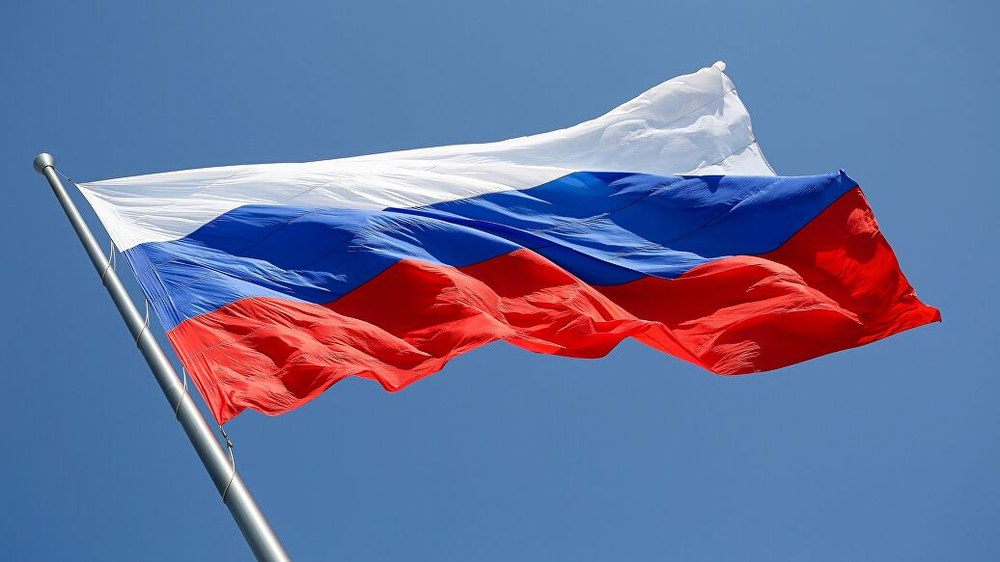
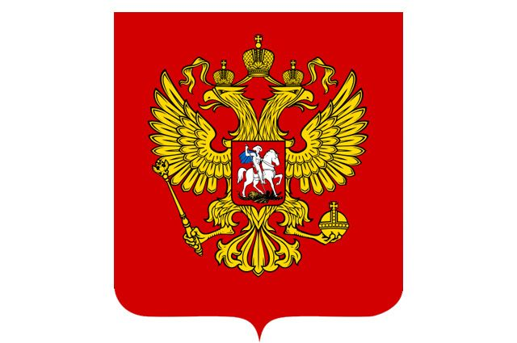
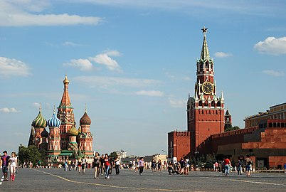
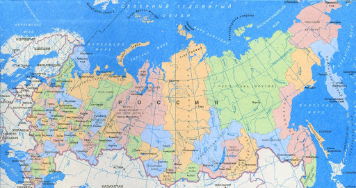

Росси́я, другое официальное название — Росси́йская Федера́ция (РФ), — федеративное государство в Восточной Европе (22 %), Северной Азии (77 %) и в Центральной Европе (1 %). Территория России в её конституционных границах составляет 17 125 191 км²; население страны (в пределах её заявленной территории) составляет 146 748 590 чел. Столица — Москва. Государственный язык — русский. Государственный строй — президентско-парламентская республика с федеративным устройством. С 31 декабря 1999 года (с перерывом в 2008—2012 годах) должность президента Российской Федерации занимает Владимир Путин. C 16 января 2020 года должность председателя Правительства РФ занимает Михаил Мишустин. В состав Российской Федерации входят 85 субъектов, 46 из которых именуются областями, 22 — республиками, 9 — краями, 3 — городами федерального значения, 4 — автономными округами и 1 — автономной областью. Всего в стране около 157 тысяч населённых пунктов. Россия имеет 25 границ (18 сухопутных и 7 морских). Россия — многонациональное государство с широким этнокультурным многообразием.Бо́льшая часть населения (около 75 %) относит себя к православию, что делает Россию страной с самым многочисленным православным населением в мире.
Промышленность Населённые пункты с численностью населения более 1 млн человек